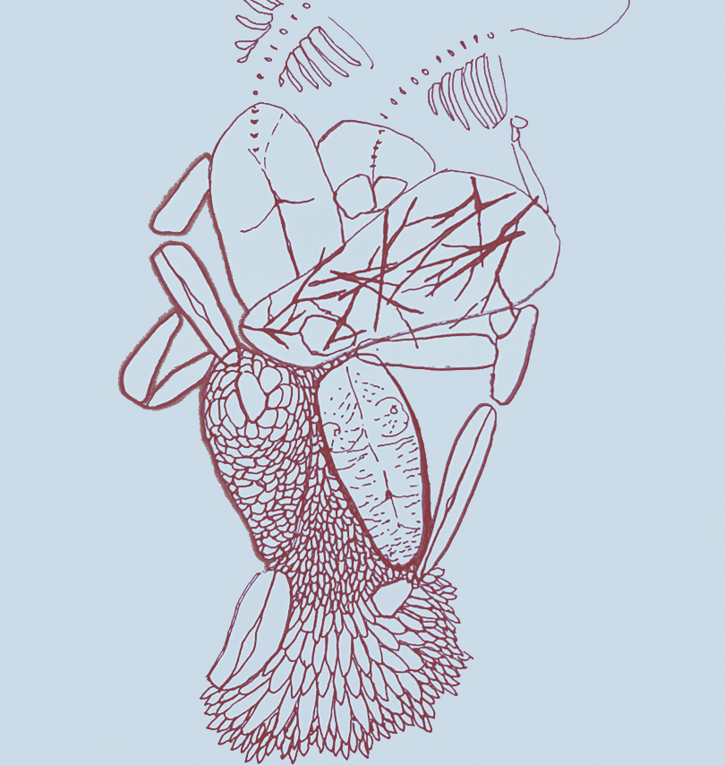

Naiara Rezende
Desenvolvedora web
Nascida e criada na Bahia, estou recém chegada no Rio de Janeiro, sou trabalhadora da cultura, artista visual, editora de vídeo, pesquisadora, ilustradora. Tenho formação em design e trabalho na área há mais de 10 anos. Me interesso por coletividades, tessituras artesanais, dispositivos culturais e espaços de memória. Venho me aproximando cada vez mais dos espaços digitais, interessada no diálogo potente entre arte e tecnologia.